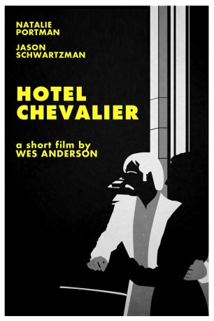

#7680 Hotel Chevalier
 
 IMDB-Wertung: 7.3 / 10
IMDB-Wertung: 7.3 / 10  Metascore: 0
Metascore: 0 
Der Amerikaner Jack Whitman (Jason Schwartzman) gibt sich in seinem Pariser Hotelzimmer, in dem er seit einiger Zeit lebt, dem Müßiggang hin, als ihn eines Tages überraschend seine Verflossene (Natalie Portman) vom Flughafen aus telefonisch ihren Besuch ankündigt. So bleiben Jack noch 30 Minuten, um sich für ein Zusammentreffen zu wappnen, das er eigentlich vermeiden wollte ...
Jahr: 2007
Dauer: 12 Minuten
FSK:
Land: USA Studio: HelpTonspuren: DTS - ,
Untertitel:
Auflösung: 1080p (1920x800) Größe: 689 MB
Genre: Drama, Liebe, Kurzfilm
Regisseur:  Wes Anderson
Wes Anderson
Drehbuch: Wes Anderson
Soundtrack: Peter Sarstedt
Darsteller:
Datei: X:\2007(G-M)\Hotel Chevalier (2007, FSK, 1920x800).mkv seit 01.12.2017
Festplatte: HD 2007(A-Z)-2008(A-F)
 Es gibt insgesamt 64 Filme in der Gruppe '2007(G-M)'
Es gibt insgesamt 64 Filme in der Gruppe '2007(G-M)'